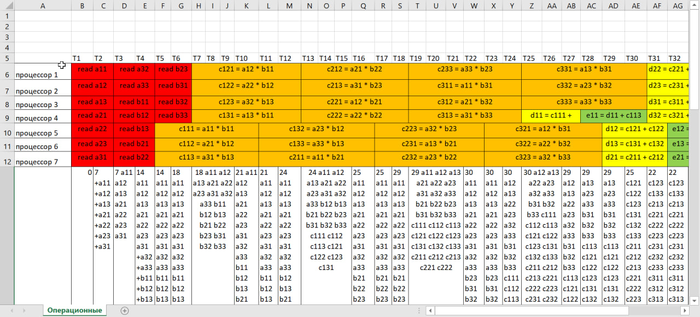

Количество процессоров
Тактов на считывание
Тактов на сложение
Тактов на умножение
Тактов на запись
Просчитать
Как пользоваться
1. Скачиваем решение в формате csv.
2. Открываем в ворде.
3. Наводим красоту.
4. Получаем
